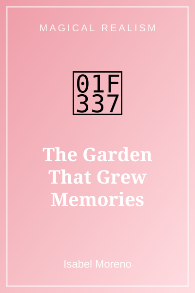
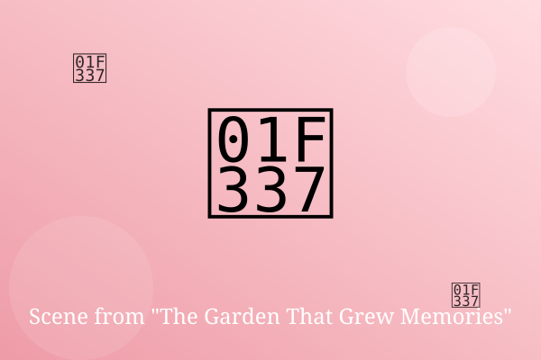

Chapter 1: What the Roses Remember

Abuela's garden bloomed in every season. Each flower, she said, was a memory that refused to be forgotten.
When Lucia smelled the white roses, she suddenly saw her grandmother's wedding day, down to the music.
'Be careful which ones you pick,' Abuela said gently. 'Some memories are sweeter than they look.'
— End of Chapter —